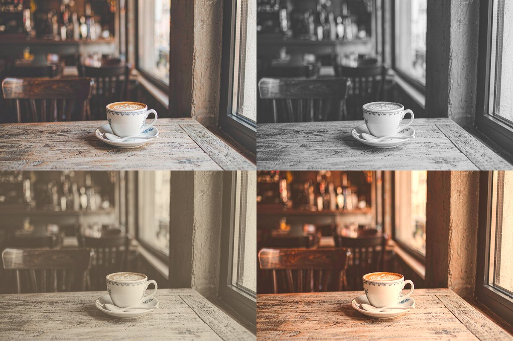

实战教程：一键滤镜风格——黑白、复古与电影感
一键套用高级感滤镜！
打开 Web PSEditor 加滤镜 →
特效菜单即点即用，图片不出浏览器。
同样一张照片，套上合适的滤镜气质就完全不同：黑白的克制、复古的温情、电影感的叙事——滤镜是成本最低的「出片」方式。Web PSEditor 内置多种滤镜特效，全部在浏览器本地实时渲染，试错零成本，不满意随时撤销。
四种常见风格一览

操作步骤

第一步：套用基础滤镜
打开照片后点击顶部 【特效 (Effects)】 菜单：
1. 黑白：选择灰度/去色类效果，适合人文、建筑、人像特写。
2. 复古：选择棕褐色/褪色类效果，瞬间有胶片味道。
3. 电影感：组合使用青橙色调类预设，对比度略拉高。
第二步：强度微调
滤镜默认强度常常「用力过猛」。套用后可以：降低图层不透明度（图层面板 50%~70%），或再次叠加原始图层用橡皮擦局部擦回，实现「部分上色」的高级效果。
第三步：叠加细节特效
在滤镜之上再叠加一层 暗角 (Vignette) 或轻微 颗粒/噪点，胶片感立刻翻倍。参数宁少勿多。
第四步：导出
满意后 【文件】→【另存为】 导出 JPG。社交平台配图建议长边 1080~1280 像素，清晰度与体积最平衡。
💡 选滤镜的捷径：想突出「人」用黑白，想讲「故事」用复古，想装「大片」用电影感青橙。
🎯
动手实操练习
纯本地运算
打开编辑器，给你的照片一键试试黑白或电影感滤镜，立刻出片。